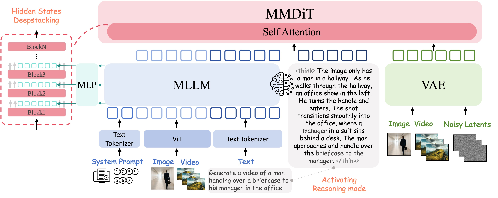
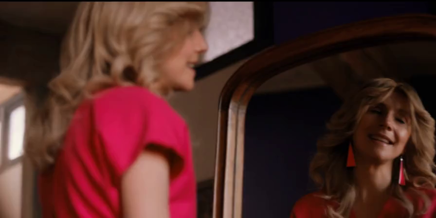
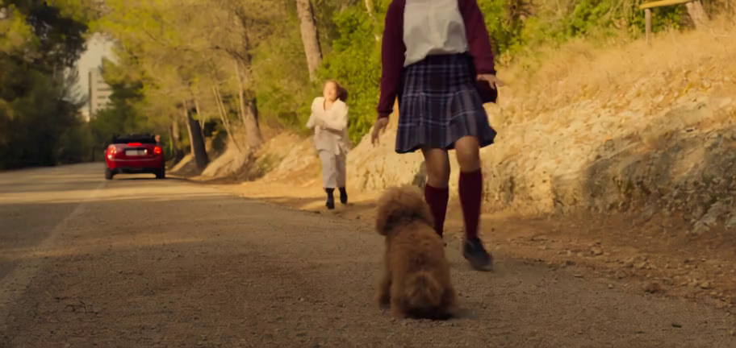
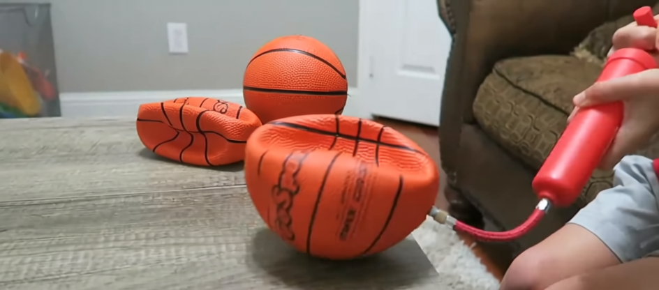
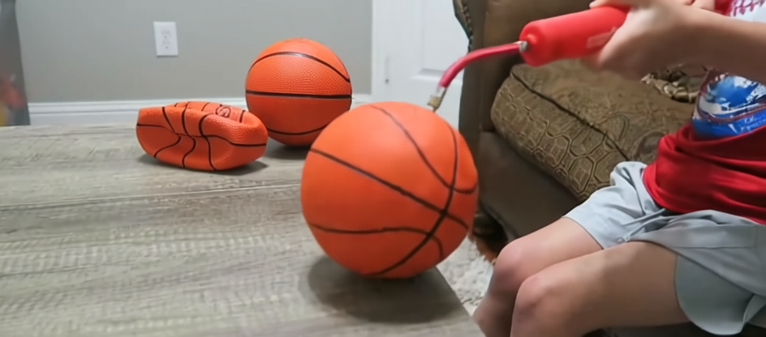
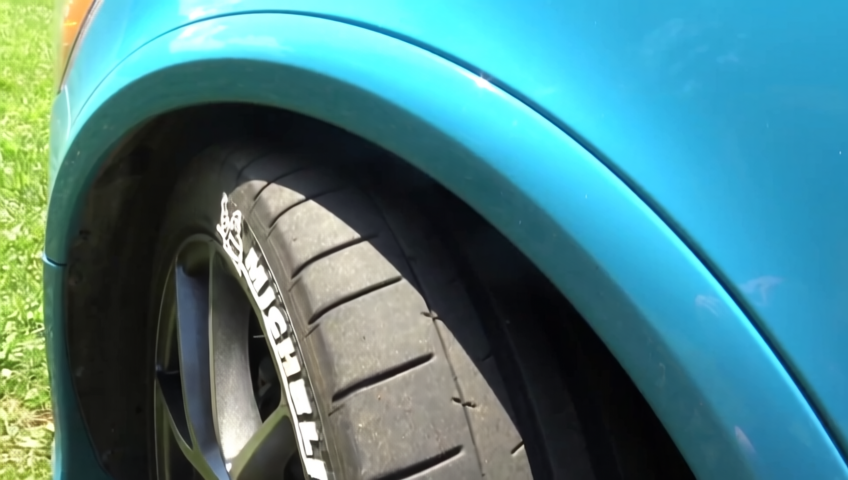
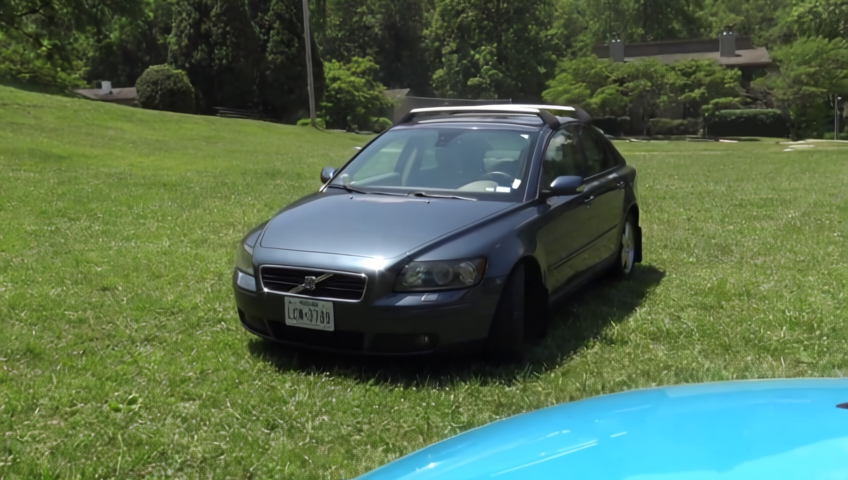
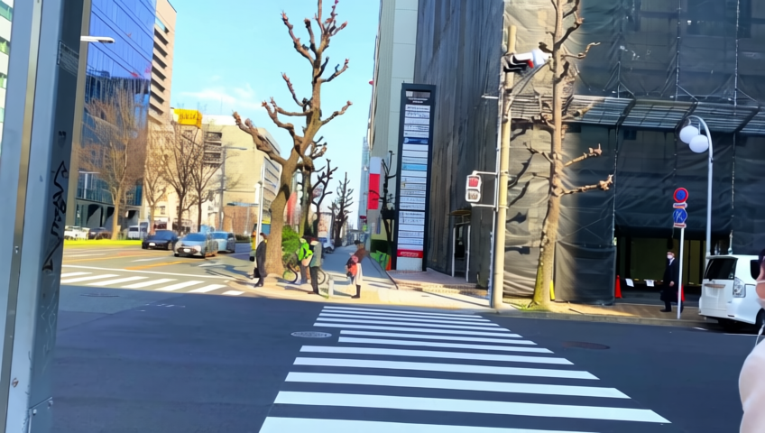
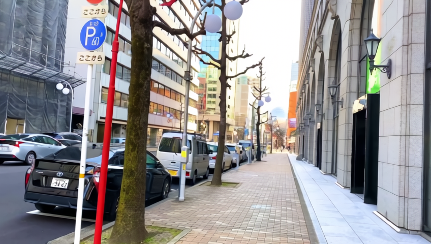

OmniWeaving
Towards Unified Video Generation with Free-form Composition and Reasoning
1Zhejiang University · 2Tencent Hunyuan · 3Nanyang Technological University
*Equal Contribution · §Corresponding Authors · †Project Leader
Work done during Kaihang Pan's internship at Tencent Hunyuan.
News
- 📌 [2026-03-25] Our model and code are under internal compliance review, and are expected to be publicly available very soon.
- [2026-03-25] We release the OmniWeaving paper on Arxiv.
- [2026-03-25] We release the webpage. Due to the large number of video demos, initial page loading may take a moment — please allow a few seconds for all videos to fully load.
Abstract
While proprietary systems such as Seedance-2.0 have achieved remarkable success in omni-capable video generation, open-source alternatives significantly lag behind. We propose OmniWeaving, an omni-level video generation model featuring powerful multimodal composition and reasoning-informed capabilities. By leveraging large-scale pretraining with diverse compositional and reasoning-augmented scenarios, OmniWeaving can temporally bind interleaved text, multi-image, and video inputs, and infer complex user intentions for sophisticated video creation.
We further introduce IntelligentVBench, the first comprehensive benchmark designed to assess next-level intelligent unified video generation. Extensive experiments show strong SoTA-level competitiveness among open-source unified models.
Model Architecture
OmniWeaving adopts a unified MLLM + MMDiT + VAE architecture that jointly handles multimodal understanding and video generation in one framework.
- Improvement 1 — Free-form Multimodal Composition: supports interleaved text, multi-image, and video inputs with stronger temporal binding and compositional controllability.
- Improvement 2 — Reasoning-informed Generation: injects intent reasoning before synthesis to better resolve implicit user goals and produce more coherent long-range dynamics.

Qualitative Examples
First-Frame-to-Video (I2V)
Image + Text → VideoKey-Frames-to-Video
2 * Images + Text → VideoVideo-to-Video Editing
Video + Text → VideoCompositional Multi-Image-to-Video
1-4 Images + Text → VideoText-Image-Video-to-Video
Video + Image + Text → VideoReasoning-Augmented Video Generation
Image(s) + Text → Reasoning + Video
Input

Prompt: The woman is preparing for an event or outing.
Reasoning
Preparing for an event or outing, the woman confidently checks her appearance in the mirror. Then, she slowly turns her head, her gaze shifting from the mirror to the camera, and finally to the side. Her expression changes from focused to a smile, and she raises her hands to touch her hair, then lowers them.
Input

Prompt: Two girls were reunited with their long-lost dog.
Reasoning
Two girls were happily greeted by their long-lost dog. The girl in the school uniform immediately turns around and kneels down, opening her arms to welcome it. The other girl in the white coat quickly joins. Their expressions transform from initial surprise to pure joy as they pet and finally hug the long-lost poodle tightly, faces pressed together and smiling happily at the camera.
Input


Prompt: Generate a video based on the provided first and last frames.
Reasoning
A child uses a red pump to inflate a basketball, which grows visibly larger as the scene progresses, while another basketball remains deflated nearby.
Input


Prompt: Generate a video based on the provided first and last frames.
Reasoning
Starting with a close-up of the turquoise car's wheel well, the camera smoothly tilts upward, revealing the car’s hood and then the dark grey Volvo station wagon parked on grass in the background, with both license plates visible under soft daylight.
Input
Prompt: Generate a video based on the provided first and last frames.
Reasoning
A gloved hand enters from the left, sprinkling red chili flakes onto the grated cheese topping on the meatballs, enhancing their appearance against the rustic wooden platter and warm wooden table.
Input


Prompt: Generate a video based on the provided first and last frames.
Reasoning
The camera begins focused on a crosswalk where pedestrians are crossing, then smoothly pans right, revealing parked cars lining the sidewalk, and finally settles on a parking sign, capturing the urban street scene.
IntelligentVBench LeaderBoard
Unified + Task-Specific Models (single table)
| Type | Model | Params | Implicit I2V (AVG) | Interpolative DI2V (AVG) | TIV2V (AVG) | MI2V 1-Subject (AVG) | MI2V 2-Subject (AVG) | MI2V 3-Subject (AVG) |
|---|---|---|---|---|---|---|---|---|
| Task-Specific | CogVideoX-I2V | 5B | 3.39 | - | - | - | - | - |
| Task-Specific | Wan2.1-I2V | 14B | 3.48 | - | - | - | - | - |
| Task-Specific | HunyuanVideo-I2V | 13B | 3.80 | - | - | - | - | - |
| Task-Specific | HunyuanVideo1.5-I2V | 8.3B | 3.70 | - | - | - | - | - |
| Task-Specific | Wan2.2-I2V | 14B | 3.86 | - | - | - | - | - |
| Task-Specific | Wan2.1-FLF2V | 14B | - | 4.42 | - | - | - | - |
| Task-Specific | SkyReels-A2 | 14B | - | - | - | 4.02 | 3.78 | 1.97 |
| Task-Specific | SkyReels-V3 | 14B | - | - | - | 3.94 | 3.86 | 3.33 |
| Task-Specific | MAGREF | 14B | - | - | - | 3.32 | 3.39 | 3.06 |
| Task-Specific | Phantom | 14B | - | - | - | 3.48 | 3.55 | 3.12 |
| Unified | VACE-Wan2.1 | 14B | 3.40 | 3.86 | 1.53 | 4.35 | 3.95 | 3.34 |
| Unified | VACE-LTX | 2B | 2.87 | 3.10 | 1.35 | 2.83 | 2.29 | 2.14 |
| Unified | VINO | 13B+4B | 3.10 | 2.47 | 2.76 | 4.13 | 4.16 | 3.28 |
| Unified | UniVideo (query) | 13B+7B | 3.39 | 2.48 | 3.46 | 3.89 | 3.63 | 2.89 |
| Unified | UniVideo (hidden) | 13B+7B | 3.61 | 2.58 | 3.36 | 3.97 | 3.90 | 3.03 |
| Unified | OmniWeaving (w/o think) | 8.3B+7B | 3.72 | 4.45 | 3.89 | 4.49 | 4.27 | 4.03 |
| Unified | OmniWeaving (think) | 8.3B+7B | 3.93 | 4.54 | - | - | - | - |
BibTeX
@article{pan2026omniweaving,
title = {OmniWeaving: Towards Unified Video Generation with Free-form Composition and Reasoning},
author = {Pan, Kaihang and Tian, Qi and Zhang, Jianwei and Kong, Weijie and Xiong, Jiangfeng and Long, Yanxin and Zhang, Shixue and Qiu, Haiyi and Wang, Tan and Lv, Zheqi and Wu, Yue and Bo, Liefeng and Tang, Siliang and Zhong, Zhao},
year = {2026},
journal = {arXiv preprint}
}